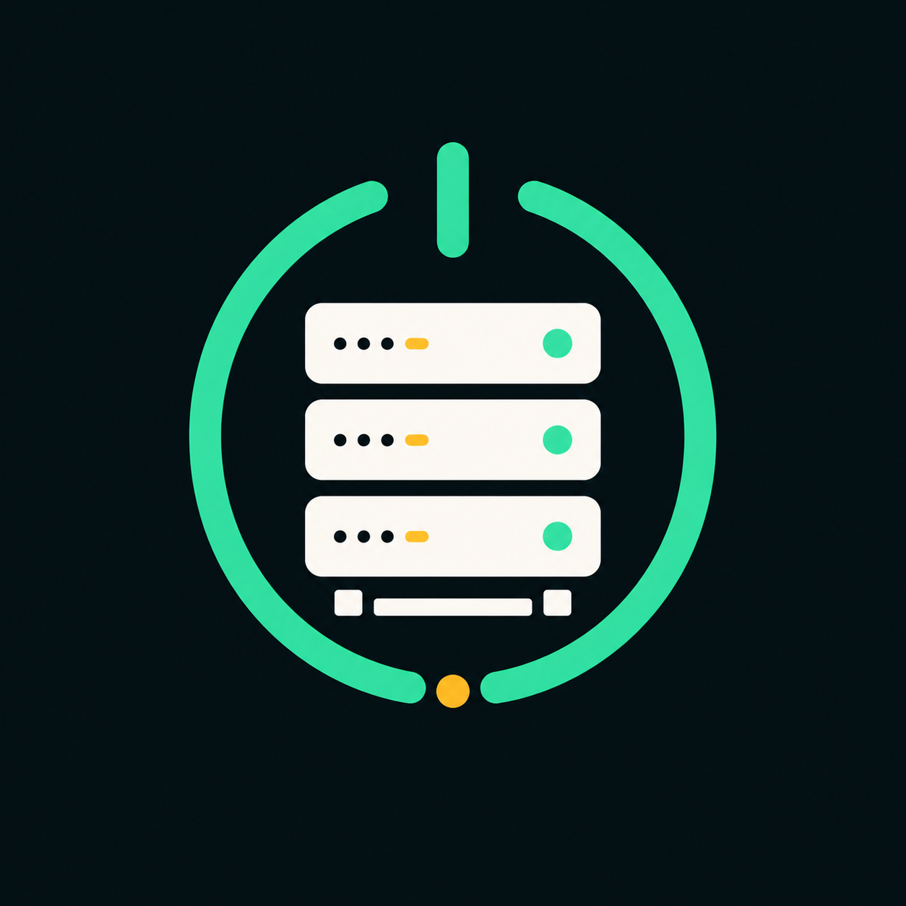

Docker and CI
Manage containers, images and Compose apps, install from the app catalog, and use Git webhooks to trigger containerized builds and tests.

OhMyServerOpen source · Self-hosted
Deploy Docker apps, manage DNS and TLS, and operate local and remote Linux hosts from your browser.
One Go binary includes the web interface and stores panel state in SQLite. Modules that manage Docker, Samba, ZFS, or system services use the corresponding software on the host.
Manage containers, images and Compose apps, install from the app catalog, and use Git webhooks to trigger containerized builds and tests.
Route HTTP and HTTPS traffic to apps, publish Docker apps through the gateway, and issue and renew ACME certificates with automatic DNS validation for managed zones.
Run a DNS resolver or serve authoritative zones. Edit DNS records in connected provider accounts, configure DHCP leases and reservations, and forward TCP or UDP ports.
Open a browser terminal on saved SSH hosts, schedule local or remote commands, and monitor Linux hosts over SSH. See open issues and send notifications to chat services.
Manage apt or dnf packages, systemd services and journal logs. Inspect routes and listening ports, run diagnostics, and apply network changes with automatic rollback unless confirmed.
Browse, edit and transfer server files, inspect disk capacity, RAID and SMART health, manage Samba shares and users, and schedule ZFS snapshots with retention.
Requires systemd and sudo or root access. The installer verifies the latest GitHub release and runs OhMyServer as a service. Supports AMD64, ARM64, ARMv7 and RISC-V 64.
curl -fsSLo install.sh https://raw.githubusercontent.com/lsongdev/ohmyserver/master/install.sh &&
sudo sh install.shThe panel defaults to http://127.0.0.1:8080 on the server. From another machine, run ssh -L 8080:127.0.0.1:8080 user@server and open that address locally. Set a password before exposing the panel.